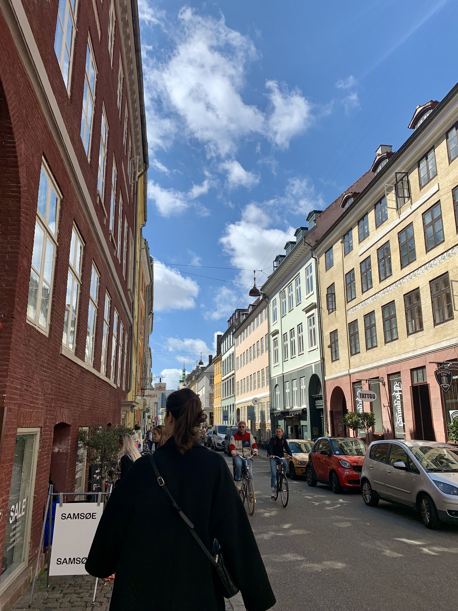
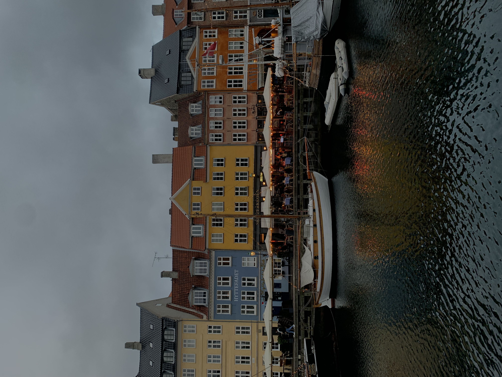
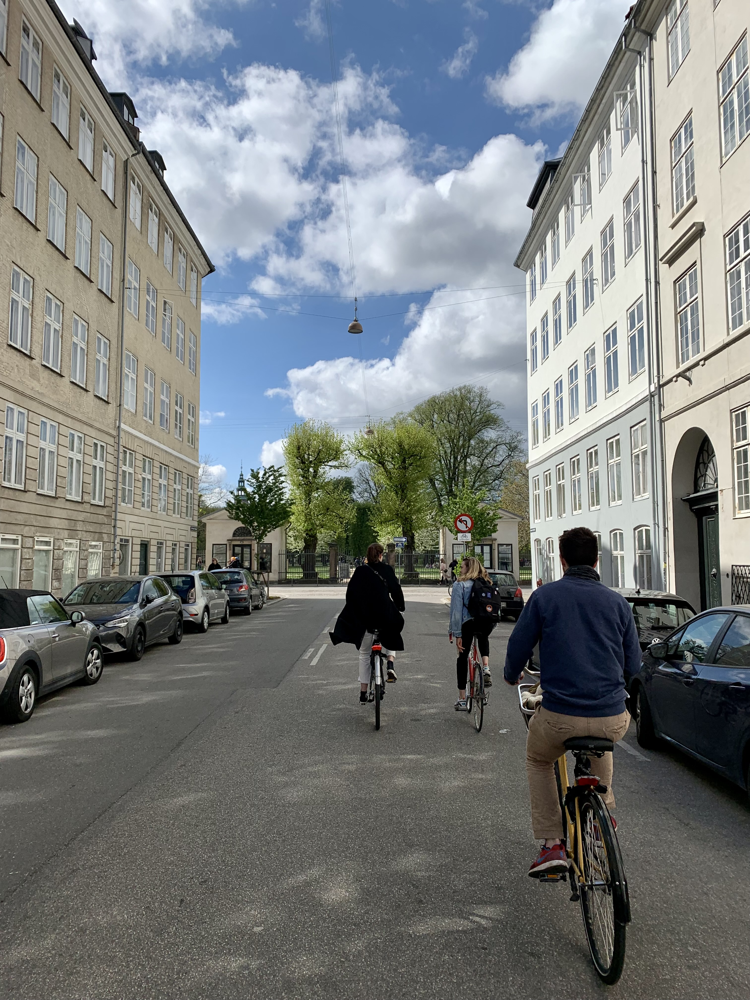
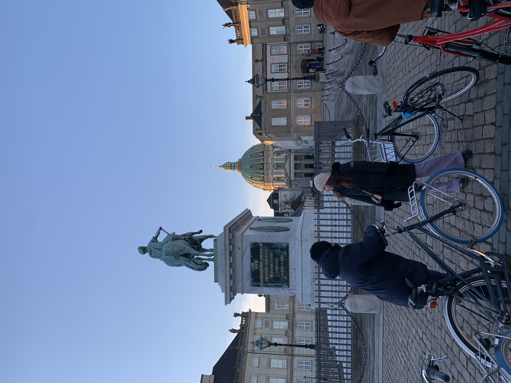
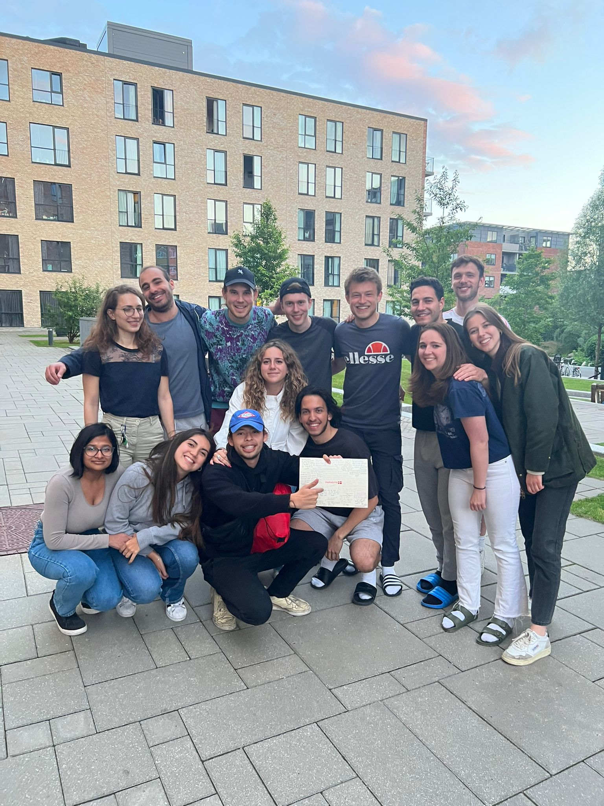

I'm 24 years old and I am a fourth year student at ESSEC, in the Global BBA Program. I'm French but speak English fluently, and I hope tot ravel and move around a bit when starting my career.
Let's connect on LinkedInI have always loved Art & Design, and was supposed to continue my studies in that field after highschool. However, I went on to attend a business school and I don't regret it! I still like to bring a lot of creativity to my projects at ESSEC though.
I'm currently doing an apprenticeship as a Digital Project Manager in a small start-up in Paris. I'm' working on digital point of sales for luxury stores and work with a team of developers on a few different projects. After my Bachlor program and apprenticeship are done, I will apply for a masters to work in Marketing and Digital Media.
I really love travelling and plan on continuing to do so. My last trip was for my exchange in Copenhagen, and my next trip will be New York this summer. Here are a few picture of my semester in Copenhagen:
